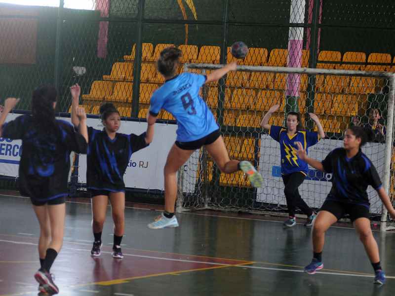

FUTSAL

VOLEY

Este deporte es similar al fútbol, con reglas diferentes, que se juega en piso liso, entre dos equipos de cinco jugadores.
| CATEGORÍAS | LUNES | MARTES | MIÉRCOLES | JUEVES | VIERNES |
|---|---|---|---|---|---|
| Escuela Mixta 6 a 10 años | 16.30 a 17.30 | 16.30 a 17.30 | |||
| Escuela Mixta 12 a 17 años | 16.30 a 17.30 | 16.30 a 17.30 | 16.30 a 17.30 | ||
| Escuela Mixta 11 y 12 años | 17.30 a 18.30 | 17.30 a 18.30 | 17.00 a 18.00 | ||
| Escuela Mixta 13 a 16 años | 17.00 a 18.30 | 17.00 a 18.30 | 17.00 a 18.30 | ||
| Juveniles y Jrs. Caballeros 17 y 18 años | 18.00 a 19.30 | 18.00 a 19.30 | 18.00 a 19.30 | ||
| Juveniles y Jrs. Damas 17 y 18 años | 18.00 a 19.30 | 18.00 a 19.30 | 18.00 a 19.30 |
Este deporte se practica con una pelota y en el que dos equipos, integrados por seis jugadores cada uno, se enfrentan sobre un área de juego separada por una red central.
| CATEGORÍAS | LUNES | MARTES | MIÉRCOLES | JUEVES | VIERNES |
|---|---|---|---|---|---|
| Escuela Mixta 6 a 10 años | 15.00 a 16.30 | 15.00 a 16.30 | 15.00 a 16.30 | ||
| Escuela Mixta 12 a 17 años | 16.00 a 18.30 | 16.00 a 18.30 | 16.00 a 18.30 | ||
| Menores y Cadetes Damas 13 a 16 años | 16.30 a 19.30 | 16.30 a 19.30 | 16.30 a 19.30 | ||
| Menores y Cadetes Caballeros 13 a 16 años | 16.30 a 19.30 | 16.30 a 19.30 | 16.30 a 19.30 | ||
| Juveniles y Jrs. Caballeros 17 y 18 años | 19.30 a 20.30 | 19.30 a 20.30 | |||
| Juveniles y Jrs. Damas 17 y 18 años | 19.30 a 20.30 | 19.30 a 20.30 |
Este deporte se practica con una pelota esférica, donde dos equipos de siete jugadores cada uno compiten por encajarla en el arco rival, marcando así un gol. El club cuenta con equipos Federados y Competitivos tanto en Damas como en Caballeros y una Escuela Formativa a partir de los 6 años y no federados.
| CATEGORÍAS | LUNES | MARTES | MIÉRCOLES | JUEVES | VIERNES |
|---|---|---|---|---|---|
| Escuela Mixta 6 a 10 años | 17.30 a 18.30 | 17.30 a 18.30 | |||
| Escuela Mixta 12 a 17 años | 17.30 a 18.30 | 17.30 a 18.30 | 17.30 a 18.30 | ||
| Infantiles Damas 11 y 12 años | 18.30 a 19.30 | 18.30 a 19.30 | 18.00 a 19.00 | 18.00 a 19.00 | |
| Infantiles Caballeros 11 y 12 años | 17.30 a 18.30 | 17.30 a 18.30 | 17.30 a 18.30 | ||
| Menores y Cadetes Damas 13 a 16 años | 18.00 a 19.30 | 18.00 a 19.30 | 18.00 a 19.30 | ||
| Menores y Cadetes Caballeros 13 a 16 años | 18.30 a 20.30 | 18.30 a 20.30 | 18.30 a 20.30 | ||
| Juveniles y Jrs. Caballeros 17 y 18 años | 19.00 a 20.30 | 19.00 a 20.30 | 19.00 a 20.30 | ||
| Juveniles y Jrs. Damas 17 y 18 años | 19.00 a 20.30 | 19.00 a 20.30 | 19.00 a 20.30 |